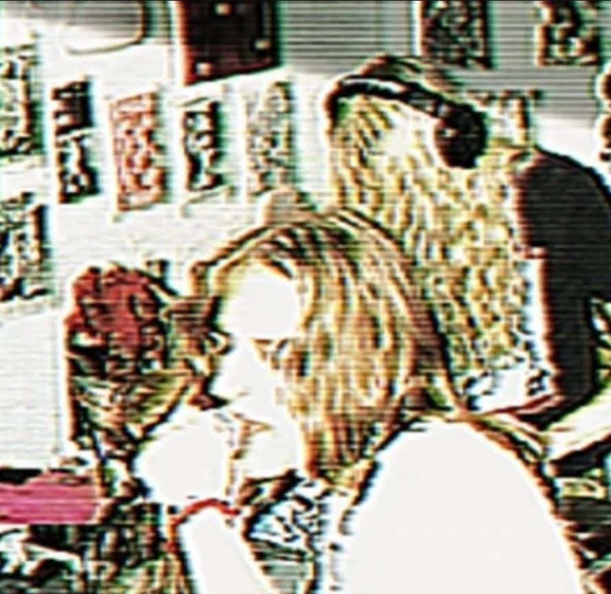

https://kfcmurderchicks.bandcamp.com/
"KFC Murder Chicks' appearance at
PNF will mark their first dip back into noise music proper in over a
decade.
Referred to by the staff at the orphanage as 'critical darlings', the KFC Murder Chicks were born and raised in Los Angeles and later born and raised in Brooklyn,
and maybe even, by the time you're reading this, born and raised in Manhattan, to unrelatably wealthy music industry/defense contractor parents."
Referred to by the staff at the orphanage as 'critical darlings', the KFC Murder Chicks were born and raised in Los Angeles and later born and raised in Brooklyn,
and maybe even, by the time you're reading this, born and raised in Manhattan, to unrelatably wealthy music industry/defense contractor parents."